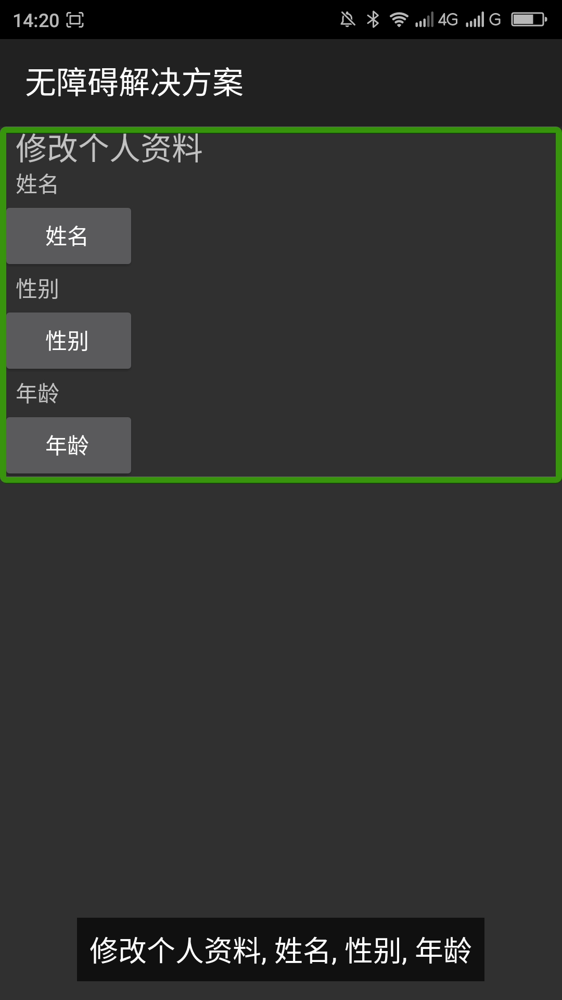
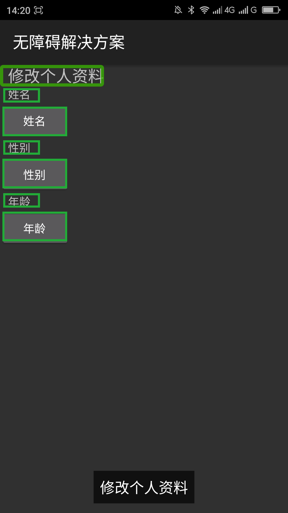

去掉大焦点____2016
【问题描述】
大焦点是一个焦点覆盖了多个视图或控件，当这个大焦点获得焦点的时候会把此焦点锁覆盖的控件部分或全部朗读出来，让用户无法很好的理解整个布局所提供的信息。有一些大焦点单指双击会响应事件，但是响应的事件很难确定是此焦点下的哪个视图或控件的响应事件。
【问题解决方案描述】
导致此问题出现的原因是父视图获得了焦点，父视图获得焦点之后，就会把此视图之中默认没有焦点的控件合并为一个大焦点并朗读出来。一种解决方法就是让父视图失去焦点，也就是不要给父试图提供android:focusable和android:focusableInTouchMode之中的任意一个属性。另外一种解决方法是把父视图中的那些默认没有焦点的控件（如:TextView）添加上焦点，就是添加上android:focusable、android:focusableInTouchMode两个属性。
【解决方案】
方案1：下面的代码把父视图的焦点去掉了，也就是把android:focusable和android:focusableInTouchMode属性去掉了。
复制内容
方案2： 把试图中默认没有焦点的控件加上焦点，下面的布局中把所有的TextView都加上了焦点.
复制内容【前后效果图对比】
|  |  |
| 优化前，有一个大焦点，屏幕阅读器朗读"修改个人资料，姓名，性别，年龄"; | 优化后，每个元素都有独立的焦点； |